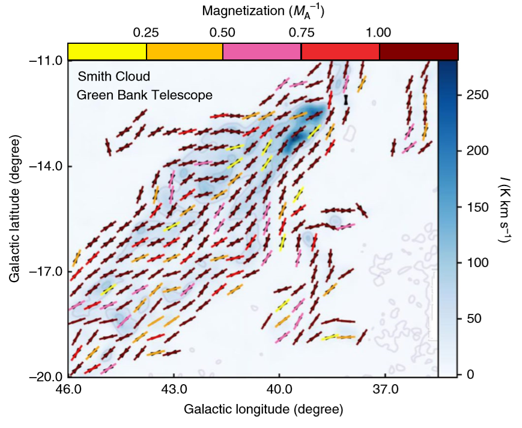
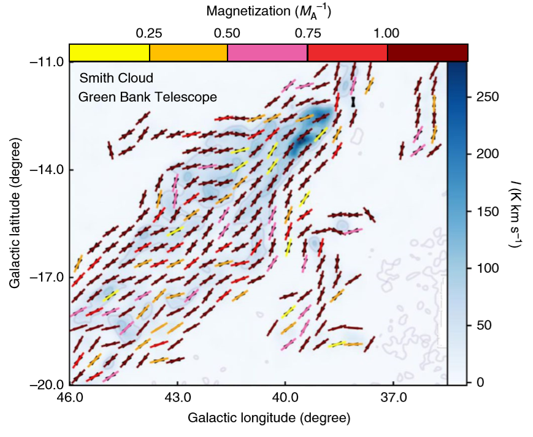
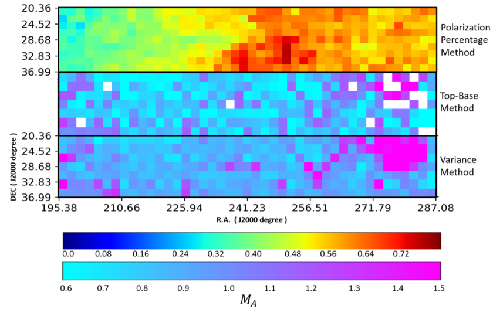
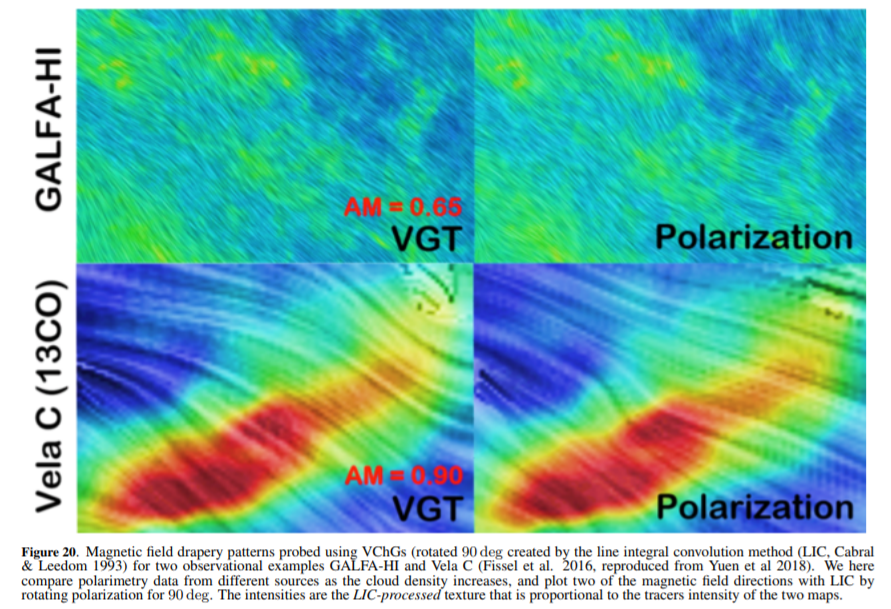
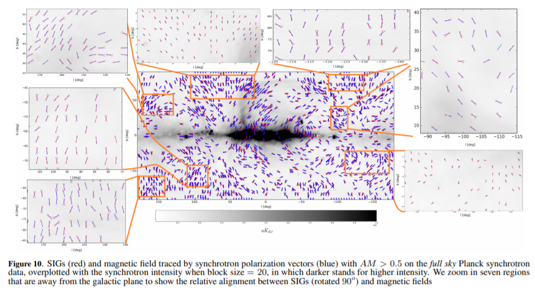
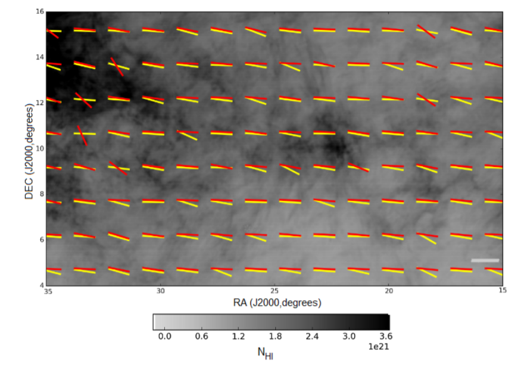
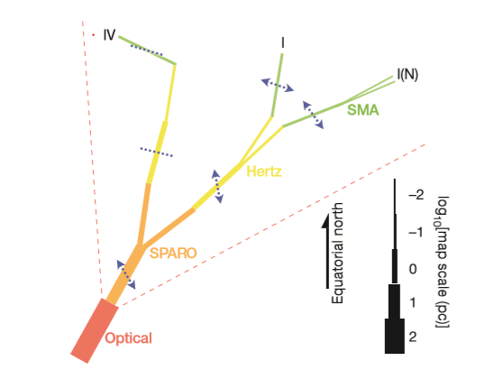

Jun 2019
Another paper published on Nature Astronomy, which provides the first molecular cloud level application of the Velocity Gradient Technique. Moreover, we provide the first prediction of magnetic field morphology of Smith Cloud:
 This is the official homepage of Ka Ho Yuen, an Astronomy PhD student in UW Madison. I am the main developer of the Velocity Gradient Technique (VGT) and its siblings Synchrotron Gradient Technique (SGT).
Timeline of my research
Another paper published on Nature Astronomy, which provides the first molecular cloud level application of the Velocity Gradient Technique. Moreover, we provide the first prediction of magnetic field morphology of Smith Cloud:
A series of papers describing how to estimate the sonic and Alfvenic Mach numbers
Gradients of Velocity Channels, See arXiv
The 1st theoretical and observational studies using the Synchrotron Intensity Gradients arXiv
The first observational application of the Velocity Gradient Technique (VGT): See arXiv
Arrive Madison as the Fullbright Lee-Hysen Fellowship
2nd author of a Nature Paper, using an innovative technique to estimate the magnetic field strength.